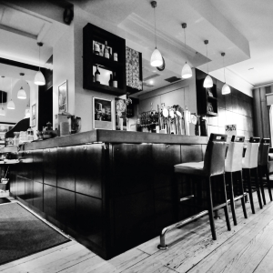

Opening in the 1970’s, The Cellar Bar has grown into a local favorite, with the emphasis being on comfort, value and entertainment. The Cellar Bar’s famous food menu offers a diverse range of meals for every taste and budget, and will ensure you never leave hungry. A firm favorite, The Cellar All-Day Breakfast is a must when in Galway City. We offer premium and varied Entertainment. On any given night you can find acoustic covers, up and coming original singer-songwriters, 5 piece rocking cover bands, electro, soul, hiphop and commercial DJ’s, live comedy acts and Trad musicians on Sundays! Check out our event listing to see what’s on this week. As well as offering great food and entertainment The Cellar Bar has a variety of Beers as well as Wine, Prosecco and Cocktails of the highest quality that can be enjoyed on a night out or on a quiet afternoon beside one of our 3 cosy Open Fireplaces served by friendly and knowledgeable bar staff. Boasting a stunning two floor venue that transforms from a busy restaurant to a buzzing late bar The Cellar Bar offers something for everyone. So if you like great entertainment, great-tasting food and friendly staff in the heart of Galway city, then this is place for you.
We recently renovated our interior in 2006 to implement a new style of culture which runs parallel to our great city which contains a rich vein of diversity. This renovation included new apoulstry for our lounge chairs and high stools, top of the range dimmed lighting (for setting a romantic mood), a range of high-definiton televisions for your viewing pleasure, and a fully stocked bar for all your cocktail-needs. We guarantee a fullfilled and enjoyable experience for all people alike, all you have to do is pay us a visit and experience this perfect venue for yourself, you will not be dissapointed!
this is the right sectionn nbjjbiv ubhfchg tftvvsf ddddd dddddddddd ddddddd ddddddd ddddddddddd ddddddddddddd dddddddddddddddd dddddddddd ddddddddd dddd ddddd dddddd ddjhb hbbyyb yyydsd fghjhgfd fghjkhy gfrdfghj kjhyg tfghj khgfdcv bjuyg tfgb hjuygf